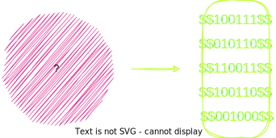
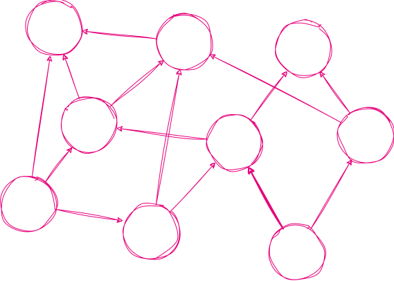
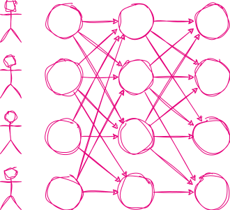
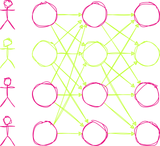

<!DOCTYPE html>
<html lang="en">

<head>
  <meta charset="utf-8" />
  <meta name="viewport" content="width=device-width, initial-scale=1.0, maximum-scale=1.0, user-scalable=no" />

  <title>Designing DAG-based consensus</title>
  <link rel="icon" href="./../../assets/favicon.svg" />
  <link rel="shortcut icon" href="./../../assets/favicon.png" />
  <link rel="stylesheet" href="./../../dist/reset.css" />
  <link rel="stylesheet" href="./../../dist/reveal.css" />
  <link rel="stylesheet" href="./../.././assets/styles/PBA-theme.css" id="theme" />
  <link rel="stylesheet" href="./../../css/highlight/shades-of-purple.css" />

  <link rel="stylesheet" href="./../.././assets/styles/custom-classes.css" />

</head>

<body class="site">
  <header class="site-header">
    <!-- This logo is a link only on the watching server, not the production build -->
    <a href="">
      
    </a>
  </header>
  <main class="reveal">
    <article class="slides">
      <section  data-markdown><script type="text/template">

# Designing DAG-based consensus
</script></section><section  data-markdown><script type="text/template">
## Agenda

<br/>

1. formalizing the consensus problem and related concepts <!-- .element: class="fragment"-->
2. meeting a framework for designing DAG-based consensus protocols <!-- .element: class="fragment"-->
</script></section><section  data-markdown><script type="text/template">
## How can this help?

<br/>

It's not very likely that you will design a new consensus protocol from scratch or even implement one... 
<!-- .element: class="fragment"-->
but it's more likely that you will have to either <font color="#c2ff33">choose</font> or <font color="#c2ff33">integrate</font> one with your system.
<!-- .element: class="fragment"-->
</script></section><section  data-markdown><script type="text/template">
## The actual goals

<br/>

- identify the key <font color="#e6007a">assumptions</font> and <font color="#e6007a">limitations</font> of the protocols
- understand the <font color="#e6007a">trade-offs</font> between different approaches
- see what <font color="#e6007a">consequences</font> the design choices have
</script></section><section  data-markdown><script type="text/template">
## What is consensus?

<br/>

- a **process** of agreeing on the same result among a group of participants
- a fundamental **problem** in distributed computing
- a key **component** of blockchain technology stack
</script></section><section  data-markdown><script type="text/template">
## Consensus features

<br/>

liveness, safety, integrity
</script></section><section  data-markdown><script type="text/template">
## We have already seen some

<br/>

Nakamoto

Babe

Grandpa

Sassafras

Tendermint

...
</script></section><section  data-markdown><script type="text/template">
## Who is running the protocol?

<br/>

Participants, called **nodes**
</script></section><section  data-markdown><script type="text/template">
## Nodes

<br/>

- nodes can be either <font color="#c2ff33">honest</font> or <font color="#e6007a">malicious</font>
- <font color="#c2ff33">honest</font> nodes follow the protocol
- <font color="#e6007a">malicious</font> nodes can deviate from the protocol in any way they want
- <font color="#e6007a">malicious</font> nodes can collude with each other
- <font color="#e6007a">malicious</font> nodes can be controlled by an adversary
</script></section><section  data-markdown><script type="text/template">
## Public key infrastructure

<br/>

- every node has its own <font color="#c2ff33">private</font> and <font color="#e6007a">public</font> key
- every node <font color="#c2ff33">signs</font> messages with its <font color="#c2ff33">private</font> key
- every node <font color="#e6007a">verifies</font> messages with other nodes' <font color="#e6007a">public</font> keys
</script></section><section  data-markdown><script type="text/template">
## Public key infrastructure

<br/>

authenticated point-to-point communication
</script></section><section  data-markdown><script type="text/template">
## Adversary

<br/>

Adversary **can** control the network delays, but is _computationally bounded_, i.e. it **cannot** break the cryptography (like forging the signatures).
</script></section><section  data-markdown><script type="text/template">
## Network

<br/>

Communication via network... but what kind of network?
</script></section><section  data-markdown><script type="text/template">
## Network models

<br/>

synchronous

partially synchronous

asynchronous
</script></section><section  data-markdown><script type="text/template">
## Network models: synchronous

<br/>

> There exists a known upper bound \\(\Delta\\) on message delivery time.

<br/>
<br/>

_Intuition: there's a well-defined notion of a protocol round_
</script></section><section  data-markdown><script type="text/template">
## Network models: asynchronous

<br/>

> There is no upper bound on message delay, though delivery is guaranteed.

<br/>
<br/>

_Intuition: you can't tell whether a node has crashed or has a long delay_
</script></section><section  data-markdown><script type="text/template">
## Network models: asynchronous

<br/>

> There is no upper bound on message delay, though delivery is guaranteed.

<br/>
<br/>

- We assume that the adversary has full control over the message delays.
- The concept of a timeout is basically useless.
</script></section><section  data-markdown><script type="text/template">
## Network models: partially synchronous

<br/>

> There exists a known bound \\(\Delta\\), and an unknown point in time **GST** after which the communication becomes synchronous with a delay \\(\Delta\\).

<br/>
<br/>

_Intuition: protocol will eventually work synchronously, but it needs to be safe before_
</script></section><section  data-markdown><script type="text/template">
## Crucial theoretical results

<br/>

> [FLP theorem] It is impossible to have a deterministic protocol that solves consensus in an asynchronous system in which at least one process may fail by crashing.

<br/>
<br/>

> [Castro-Liskov theorem] It is impossible to have a protocol that solves consensus in a partially synchronous system with \\(3f+1\\) nodes in which more than \\(f\\) processes are byzantine.
</script></section><section  data-markdown><script type="text/template">
## Crucial theoretical results

<br/>

> [FLP theorem] It is impossible to have a <font color="#c2ff33">deterministic</font> protocol that solves consensus in an <font color="#c2ff33">asynchronous</font> system in which at least one process may fail by crashing.

<br/>
<br/>

> [Castro-Liskov theorem] It is impossible to have a protocol that solves consensus in a <font color="#c2ff33">partially synchronous</font> system with \\(3f+1\\) nodes in which <font color="#c2ff33">more than</font> \\(f\\) processes are byzantine.
</script></section><section  data-markdown><script type="text/template">
## Consequence

<br/>

The best one can hope for in **asynchronous** scenario is **probabilistic** protocol tolerating **up to** \\(f\\) faults for \\(3f+1\\) participants.

<br/>

> ✅ <font color="#c2ff33">**Doable!**</font>

<!-- .element: class="fragment"-->
</script></section><section  data-markdown><script type="text/template">
## Note on randomness

<br/>

Real probability is actually needed in the extremely hostile environment.
In case where the adversary is not legendarily vicious, even a dumb (but non-trivial) randomness source will do.
</script></section><section  data-markdown><script type="text/template">
## Responsiveness
</script></section><section  data-markdown><script type="text/template">
## Responsiveness

<br/>

Protocols that are **not responsive** have to **wait for** \\(\Delta\\) **time** to proceed to the next round.
<br/>
</script></section><section  data-markdown><script type="text/template">
## Responsiveness

<br/>

Protocols that are **not responsive** have to **wait for** \\(\Delta\\) **time** to proceed to the next round.
<br/>
<br/>

- \\(\Delta\\) must be long enough to allow all honest nodes to send their messages.
- \\(\Delta\\) must be short enough to allow the protocol to make progress.
- In case of failure, they have to perform a pretty expensive recovery procedure (like the leader change).
</script></section><section  data-markdown><script type="text/template">
## Responsiveness

<br/>

Protocols that are **responsive** **wait for** \\(2f+1\\) **messages** to proceed to the next round.

<br/>
<br/>

> <font color="#c2ff33">Why \\(2f+1\\)?</font>

<!-- .element: class="fragment"-->
</script></section><section  data-markdown><script type="text/template">
## Responsiveness

<br/>

Protocols that are **responsive** **wait for** \\(2f+1\\) **messages** to proceed to the next round.

<br/>
<br/>

> <font color="#c2ff33">Among \\(2f+1\\) nodes, there are at least \\(f+1\\) honest ones, i.e. honest majority.</font>
</script></section><section  data-markdown><script type="text/template">
## Responsiveness

<br/>

Protocols that are **responsive** **wait for** \\(2f+1\\) **messages** to proceed to the next round.
<br/>
<br/>

- Asynchronous protocols must be responsive.
- In good network conditions, they significantly much faster.
</script></section><section  data-markdown><script type="text/template">
## Checkpoint

<br/>

Up to this point, we covered:

- consensus problem
- node types and adversary
- inter-node communication
- network models (synchronicity)
- protocol limitations in asynchronous network (honesty fraction and the need for randomness)
- responsiveness
</script></section><section  data-markdown><script type="text/template">
## Warmup exercise: broadcast

<br/>

> (In an asynchronous network) **reliably** send a single message to all other nodes.

<br/>
<br/>

- (_validity_) If the sender is honest and broadcasts a message \\(m\\), then every honest node outputs \\(m\\).

<!-- .element: class="fragment"-->

- (_integrity_) If an honest node outputs a message \\(m\\), then it must have been broadcast by the sender.

<!-- .element: class="fragment"-->

- (_agreement_) If an honest node outputs a message \\(m\\), every other honest node outputs \\(m\\).

<!-- .element: class="fragment"-->
</script></section><section  data-markdown><script type="text/template">
## Reliable broadcast protocol (RBC)

<br/>


</script></section><section  data-markdown><script type="text/template">
## Reliable broadcast in practice

<br/>

Due to the very high communication complexity we use heuristics or cryptography-based tricks.
</script></section><section  data-markdown><script type="text/template">
## Blockchain protocol vs Atomic broadcast

<br/>

Atomic broadcast
<br/>


</script></section><section  data-markdown><script type="text/template">
## Randomness formalized

<br/>

Randomness beacon
<br/>


</script></section><section  data-markdown><script type="text/template">
## Atomic broadcast: timeline

<br/>


</script></section><section  data-markdown><script type="text/template">
## Atomic broadcast: timeline

<br/>


</script></section><section  data-markdown><script type="text/template">
## Fun fact

<br/>

Aleph paper, as the first, also achieved fully asynchronous randomness beacon:

- with efficient setup (\\(O(1)\\) rounds, \\(O(N^2)\\) communication)
- with \\(O(1)\\) expected rounds to output a random value with \\(O(N)\\) communication per round
</script></section><section  data-markdown><script type="text/template">
## Consensus protocols (selection)

<br/>

<pba-cols>
<pba-col>

### Classical protocols:

- [DLS’88], [CR’92],
- PBFT [CL’99]
- Random Oracles … [CKS’05]
- Honey Badger BFT [MXCSS’16]
- Tendermint [BKM’18]
- VABA [AMS’19]
- Flexible BFT [MNR’19]
- HotStuff [YMRGA’19]
- Streamlet [CS’20]
- Grandpa [SKK'20]

</pba-col>
<pba-col>

### DAG-based protocols:

- [L. Moser, P. Meliar-Smith ‘99]
- Hashgraph [B’16]
- Aleph [GLSS’18]
- DAG-Rider [KKNS’21]
- Highway [KFGS’21]
- Narwhal&Tusk [DKSS’22]
- Bullshark [SGSK’22]

</pba-col>
</pba-cols>
</script></section><section  data-markdown><script type="text/template">
## DAG-based protocols
</script></section><section  data-markdown><script type="text/template">
## DAG

<br/>

Directed Acyclic Graph
<br/>


</script></section><section  data-markdown><script type="text/template">
## How does it relate to consensus?

<br/>

Intuition: graph represents the dependencies between messages (units).
<br/>


</script></section><section  data-markdown><script type="text/template">
## Framework core

<br/>

1. We maintain a local DAG representing our knowledge of the units. <!-- .element: class="fragment"-->
2. We perform a local, offline consensus on our DAG. <!-- .element: class="fragment"-->
</script></section><section  data-markdown><script type="text/template">
## Framework core

<br/>

1. We maintain a local DAG representing our knowledge of the units.
2. We perform a local, <font color="#c2ff33">**offline consensus**</font> on our DAG.
</script></section><section  data-markdown><script type="text/template">
## Framework core (in other words)

<br/>

1. (online): sending and receiving units that contribute to the local DAG
2. (offline): everybody performs a local consensus on the DAG, just by looking at it
</script></section><section  data-markdown><script type="text/template">
## Clue observations

<br/>

- local DAGs might differ... <!-- .element: class="fragment"-->
- but they are guaranteed to converge to the same DAG <!-- .element: class="fragment"-->
- the offline consensus is guaranteed to produce the same result <!-- .element: class="fragment"-->
</script></section><section  data-markdown><script type="text/template">
## Adversary control

<br/>


</script></section><section  data-markdown><script type="text/template">
## Randomness? Where is randomness?

<br/>

It is put into the local consensus protocol.
</script></section><section  data-markdown><script type="text/template">
## Relation to the atomic consensus problem

<br/>

- nodes receive transactions and put them into units
- nodes send each other their new units
- (locally) nodes come up with a linear ordering of the units and make blocks from chunks
</script></section><section  data-markdown><script type="text/template">
## Digression: block production, information dissemination and finalization

<br/>

The common approach (e.g. in Substrate):

- production and dissemination is done in the same layer
- afterwards, nodes perform consensus on finalizing disseminated blocks

<br/>

Natural approach for DAG-based protocols:

- information dissemination happens as 'the first phase'
- block building and (instant) finalization happens locally
</script></section><section  data-markdown><script type="text/template">
## Main consequences of the different separation

<br/>

- block signatures
- speed
</script></section><section  data-markdown><script type="text/template">
## Local consensus: goal

<br/>

Local copies might differ significantly, blocks might have not come to all nodes yet, etc...
but we have to make common decision about unit ordering!
</script></section><section  data-markdown><script type="text/template">
## Key concept: availability

<br/>

Intuitively, a unit is **available** if:

<br/>

- most of the nodes have it <!-- .element: class="fragment"-->
- it was distributed pretty promptly (we won't call a unit available, if it finally arrived everywhere after a month) <!-- .element: class="fragment"-->
- most of the nodes know that most of the nodes know that most of the nodes know... that it is available (mutual awareness) <!-- .element: class="fragment"-->
</script></section><section  data-markdown><script type="text/template">
## Availability

<br/>

If a unit is available, it is a good candidate for being chosen as an 'anchor' in extending current ordering.
</script></section><section  data-markdown><script type="text/template">
## Lightweight case study

<br/>

Aleph Zero BFT protocol
</script></section><section  data-markdown><script type="text/template">
## Head

<br/>


</script></section><section  data-markdown><script type="text/template">
## Building blocks

<br/>


</script></section><section  data-markdown><script type="text/template">
## Choosing head

<br/>


</script></section><section  data-markdown><script type="text/template">
## Availability determination

<br/>

Units vote for each other's availability.
</script></section><section  data-markdown><script type="text/template">
## (Part of) availability determination

<br/>

Vote<sub><font color="#c2ff33">U</font></sub>(<font color="#e6007a">V</font>) =

- \[\[<font color="#c2ff33">U</font> is parent of <font color="#e6007a">V</font>\]\] if <font color="#e6007a">V</font> is from the round just after the round of <font color="#c2ff33">U</font>
- `0`/`1` if all children of <font color="#c2ff33">U</font> voted `0`/`1`
- `CommonVote(round(`<font color="#c2ff33">U</font>`), round(`<font color="#e6007a">V</font>`))` otherwise
  <br/>
  <br/>

_(U comes from the earlier round than V)_
</script></section><section  data-markdown><script type="text/template">
## Bonus: generating randomness

<br/>

Sig<sub>`sk`</sub>(nonce)

<!-- .element: class="fragment"-->
<br/>

<div class="fragment">

- randomness must be unpredictable
- delayed reveal
- must depend on \\(f+1\\) nodes
- cannot be disturbed by the adversary

</div>
</script></section><section  data-markdown><script type="text/template">
## Standard way

<br/>


</script></section><section  data-markdown><script type="text/template">
## Standard way

<br/>


Problem: need for trusted dealer! <!-- .element: class="fragment"-->
</script></section><section  data-markdown><script type="text/template">
## One simple trick

<br/>

<font color="#c2ff33">Everybody is dealing secrets</font> <!-- .element: class="fragment"-->
</script></section><section  data-markdown><script type="text/template">
## Combining randomness

<br/>


</script></section>
    </article>
  </main>

  <script src="./../../dist/reveal.js"></script>

  <script src="./../../plugin/markdown/markdown.js"></script>
  <script src="./../../plugin/highlight/highlight.js"></script>
  <script src="./../../plugin/zoom/zoom.js"></script>
  <script src="./../../plugin/notes/notes.js"></script>
  <script src="./../../plugin/math/math.js"></script>

  <script src="./../../assets/plugin/mermaid.js"></script>
  <script src="./../../assets/plugin/mermaid-theme.js"></script>

  <script src="./../../assets/plugin/chart/chart.js"></script>
  <script src="./../../assets/plugin/chart/chart.min.js"></script>

  <script src="./../../assets/plugin/tailwindcss.min.js"></script>

  <script>
    function extend() {
      var target = {};
      for (var i = 0; i < arguments.length; i++) {
        var source = arguments[i];
        for (var key in source) {
          if (source.hasOwnProperty(key)) {
            target[key] = source[key];
          }
        }
      }
      return target;
    }

    // default options to init reveal.js
    var defaultOptions = {
      controls: true,
      progress: true,
      history: true,
      center: true,
      transition: 'default', // none/fade/slide/convex/concave/zoom
      slideNumber: true,
      mermaid: {
        startOnLoad: false,
        logLevel: 3,
        theme: 'base',
        themeVariables: {
          primaryColor: purple,
          primaryTextColor: white,
          primaryBorderColor: pink,
          lineColor: pink,
          secondaryColor: lightPurple,
          tertiaryColor: lightPurple,
        },
      },
      chart: {
        defaults: {
          color: 'lightgray', // color of labels
          scale: {
            beginAtZero: true,
            ticks: { stepSize: 1 },
            grid: { color: "lightgray" }, // color of grid lines
          },
        },
        line: { borderColor: ["#ccc", "#E6007A", "#6D3AEE"], "borderDash": [[5, 10], [0, 0]] },
        bar: { backgroundColor: ["#ccc", "#E6007A", "#6D3AEE"] },
      },
      plugins: [
        RevealMarkdown,
        RevealHighlight,
        RevealZoom,
        RevealNotes,
        RevealMath,
        RevealMermaid,
        RevealChart
      ]
    };

    // options from URL query string
    var queryOptions = Reveal().getQueryHash() || {};

    var options = extend(defaultOptions, {"width":1400,"height":900,"margin":0,"minScale":0.2,"maxScale":2,"transition":"none","controls":true,"progress":true,"center":true,"slideNumber":true,"backgroundTransition":"fade"}, queryOptions);
  </script>


  <script>
    Reveal.initialize(options);
  </script>
</body>

</html>
